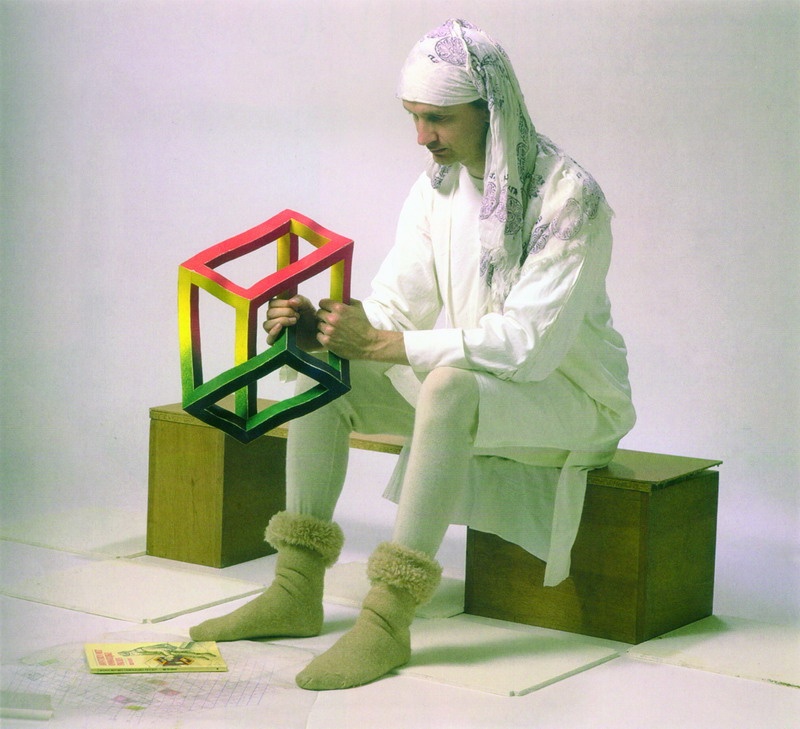

幻觉使人进步
#1 幻觉使人进步作者：秋叶散人 发表时间：2010-5-25 15:50:34
这虽然是一篇早已发表的文章，但今天读起来还是有点味道的。
2009-12-28 作者：陈新（风尘）
佛教的理论曾经论述过，每个人其实都生活在幻觉之中，我对这点非常的赞同，幻觉本身也无对错之分，因为通常你不知道它从那里什么时候来,也无法预料到下次会出现到什么样的时间、地点和人物中去,我说不清自己是个寻求问题的哲学派还是一个解决问题的科学派,但如果把五子棋和幻觉联系起来的话,或许是能激起许多的共鸣来.
五子棋的幻觉是什么？有人活了一手三，结果是个三三．．．(这是个比较激烈的幻觉)有人算出来的一套杀最后一落下去才发现,不是少算了一个反就是多算了一个点或是一条线的重复利用,虽然严格的说来应该是明明没有杀却算到了有杀才是幻觉,但其实大部分人心里是知道自己还没算清到底杀了还是没杀,然后就落下去的时候发现和自己开始算的还是不一样,这是否也是幻觉呢?恩恩...我知道这句话已经开始让人产生不同的幻觉了&*^$%&.*(*&)准确答案嘛...不重要,因为我也不一定知道>_<,但我想给大家讲述一个真实的故事,这也是存在于我身上最久的一种幻觉.
因为欣赏一句话，我做了职业棋手，问：＂这个东西现在做起来肯定很辛苦吧？＂答：＂这是肯定的，但当你知道它做起来有发展有前途的时候那多半已经轮不到你来做了．＂（徐永伟）这是０５年在海宁浙江赛和老鬼当时初次见面聊的几句，于是我就去做了，从那天到现在有很多坚持不下去或顶不住压力的时候我都会想起这句话，也经常和别人提到这句话，无非就是想让自己更坚定的活在乐观的假设之中，这不就是幻觉么^_^当然幻觉不能就狭义的理解为现在还没有得到的东西，因为或许这个将来可以有，或许这个真没有，但只要最初的意念让我们产生的行动是有益的，那这种激发向上的幻觉往往被称之为理想,理应值得去追求.
什么不能幻?
如果把自己的幻觉放大点来看呢？可能跟我一样有这种幻觉的人不止十个八个吧．．．这个基数在中国很小，但再放大就不小了．因为确实是有继续放大的理由，那就是这个幻觉其实还是不同程度的满足到了包括我自己在内的一部分人．国内的比赛越来越多，级别和奖金也越来越高，这种幻觉自然还会蔓延，但那些危险的隐患我们又是否能够经常想起来提醒自己?恐怕有人是来不及想，有人甚至是不敢去想，幻喜不幻忧这也是大多数人出现在幻觉之中的状态．但如果有天出现了难以接受的局面摆在我们面前的时候，恐怕破灭的幻觉才是人们印象最深刻的吧~~~
为什么智运会后五子棋突然陷入一种奄奄一息的状态?其实我的感觉是每年的这个时候都是这种状态，冬天来了万物藏眠，但比起在寒风和病毒中热血作战的１１月来，１２月的冷清让大家明显的体会到了这种落差感，这是两个月之间的对比，那再放大，明年和今年的对比会是什么？第一届智运会结束后和第二届智运会结束后的对比又将会是什么？
明年中国棋院的重点开展项目应该是广州亚运会上的围棋、中象和国象,以及各棋类协会所赖以生存的国内联赛和世界大赛,在前面这句话里无论是协会还是联赛,五子棋都没有,所谓的世界大赛我如果说没有,对不起上帝,如果我说有,那又对不起上帝创造出来的中国棋手,抗着国旗去自费参赛,拿到好成绩是水到渠成,拿不到好成绩是暗箱操作...到现在仍然是挂靠在围棋协会里的一个鸡肋委员会,和成熟的棋类项目没的比是自然规律的结果,但和去年才登陆中国的国际跳棋相比,他们在智运会刚结束就成立了国内的专业协会,用成都棋院谢院长的话说人家现在是中国棋院刘院长、褚书记这些任副主席的专业协会,肯定今后还有一系列政策和活动都会大力的扶持这个项目,而从她在北京参加国跳协会的成立活动时特意打听到的五子棋信息来看，也许今后就是这么玩的了．这话不知道有多少人能懂，但在十年等一回的智运会刚落幕不久，四川代表队还获得了五子棋首金的情况下，她这番心有余而力不足的肺腑之言让我懂的很深重．是啊，你世界上没正式组织，国内没协会，该让他们用什么方式来看待和对待呢？现在看起来到是有你五子棋不多无你五子棋不少的一个情况，五子棋本身或许确实是可有可无，但投身到五子棋的这些人他们还能无到哪里去呢？现在看来明年又是我们自己玩的一年，这并不可怕，玩到智运会有五子棋这个项目也是玩了十年的结果，但怕的就是玩不到下一个十年，如果等到下届全国智运会结束的时候，五子棋还没有国内的专业协会的话,我个人认为五子棋极有可能被其他有专业协会的的项目所取代今后在全国智运会上的资格，很容易联想到的就是麻将，因为麻将在世界上既有正式协会组织在国内又有超庞大参与人数，下届全国智运会是２０１１年，２０１２年又将会有世界智运会，到了那时你五子棋国际国内都没有正式协会的项目确实也难有脸面和资格保留在全国智力运动会上了，这次进的了全国智运会号称的是广泛的群众
#2 Re:幻觉使人进步作者：淡红的秋樱 发表时间：2010-5-25 16:01:05
论坛里面有吧。
［此帖子已被 淡红的秋樱 在 2010-5-25 16:03:51 编辑过］
#3 Re:幻觉使人进步作者：秋叶散人 发表时间：2010-5-25 16:03:40
新人们可以看看；“老人们”也可以再想想。。。
#4 Re:幻觉使人进步作者：屏蔽 发表时间：2010-5-25 18:13:08
火星是不对的……#5 Re:幻觉使人进步作者：怪 发表时间：2010-5-25 23:11:59
听说曹县和韩洲断绝所有关系了。#6 Re:Re:幻觉使人进步作者：淡红的秋樱 发表时间：2010-5-26 1:47:12
